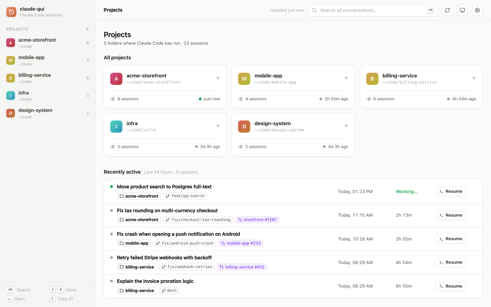
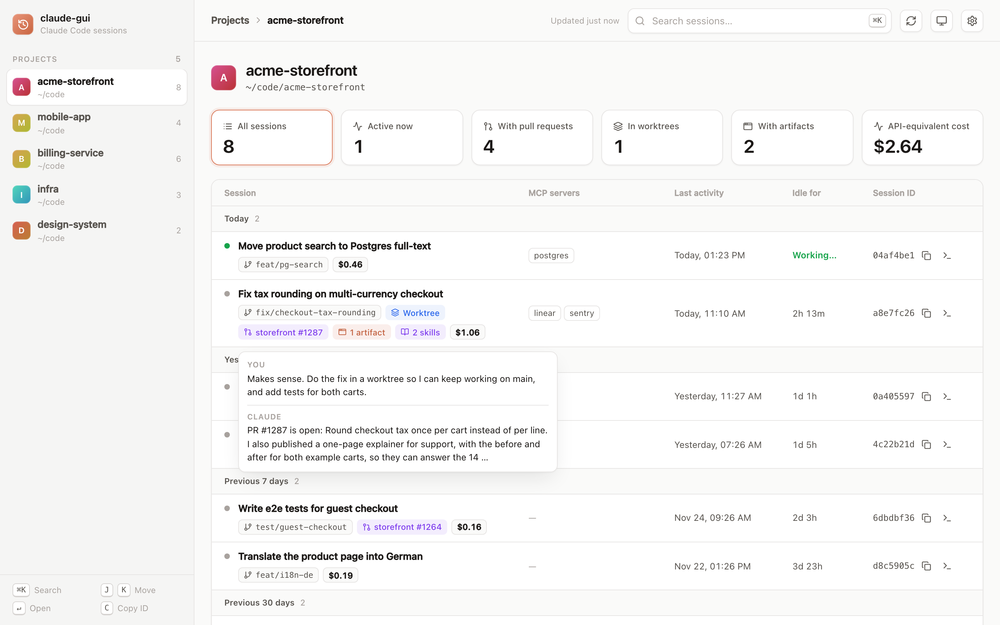
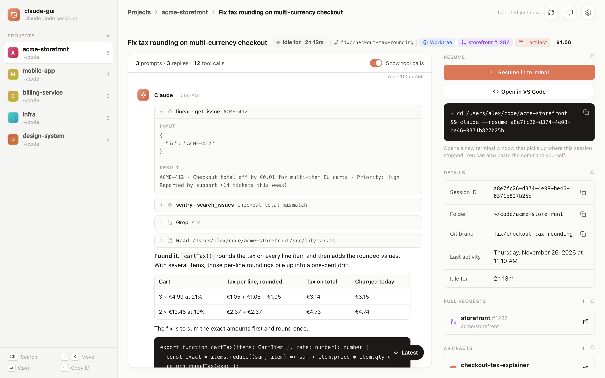
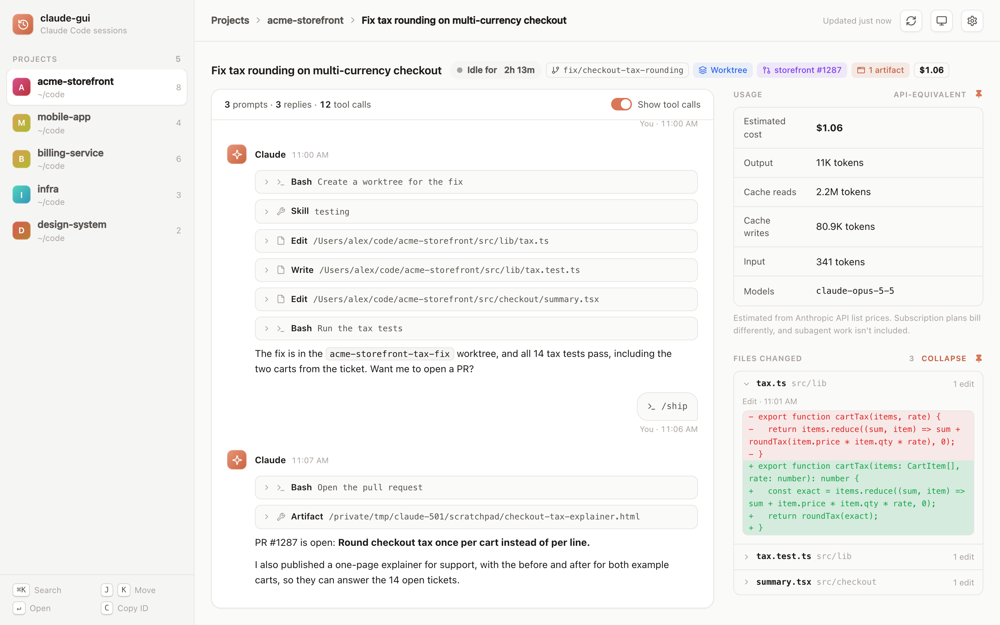
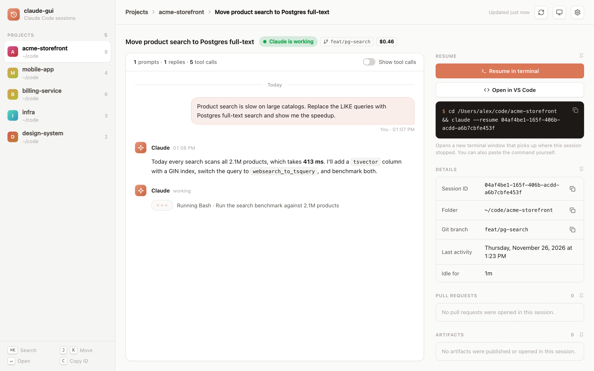
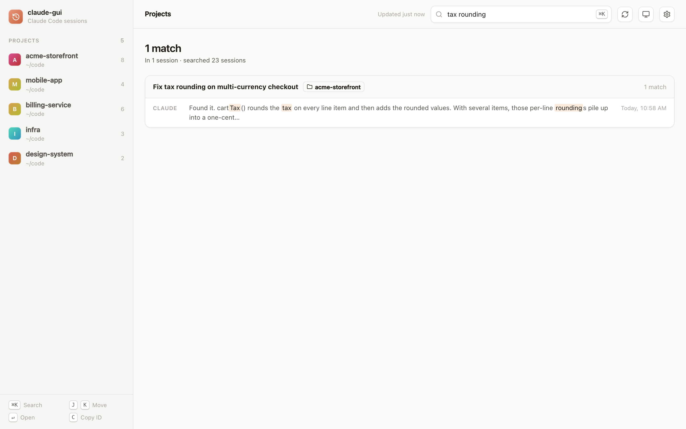
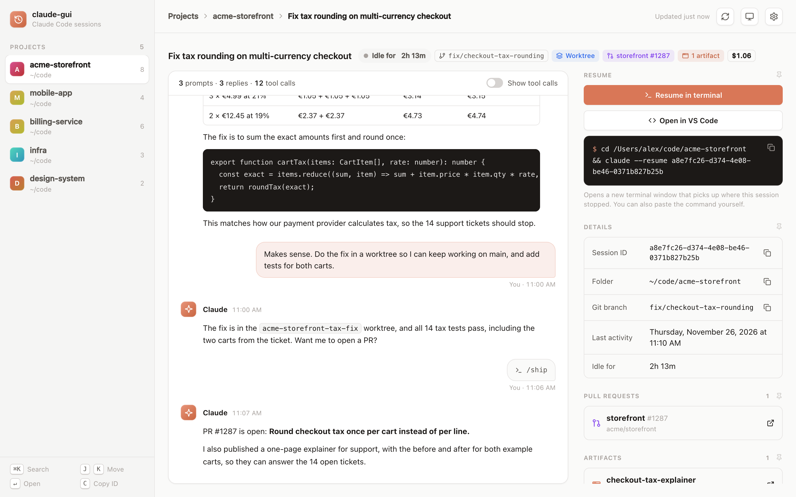

Claude Code remembers everything. Finding it is the hard part.
Every session is saved on your disk as a raw transcript file. Useful, until you actually need to find one.
Your computer crashed mid-work
Five sessions were open in three projects. Which one was fixing the checkout bug, and what was its ID?
--resume sees one folder
The built-in picker lists titles for the folder you're in. It can't search, and it shows nothing else about a session.
"Where did Claude explain that?"
The answer is in a transcript from last Tuesday, somewhere among hundreds of megabytes of JSON.
No idea what a session did
Which files did it change? Which PR did it open? Did it make a worktree? How much did it cost?
claude-gui answers all four. It reads the transcripts already on your disk and turns them into a dashboard you can search, browse and resume from.
Everything a session did, on one page
Nothing to configure. It finds every project you've used Claude Code in on its own.
See what you were working on, at a glance
The home screen lists every project you've used Claude Code in, with the sessions active in the last 24 hours right below, each with a one-click Resume.
- Recently active sessions from every project, newest first
- The branch and pull request for each session, right on its row
- A live "Working…" status while Claude is still replying

Hover a session to see your last prompt and Claude's last reply
Each project lists its sessions by day. Hover any one and a card shows exactly where it stopped, so you can tell sessions apart without opening them.
- Stat tiles that filter by active now, with PRs, in worktrees or with artifacts
- The estimated cost of each session and of the whole project
- Copy a session ID or resume it straight from the list

Read the whole conversation, the way you had it
Open a session to read everything you and Claude said. Replies are rendered as markdown, with tables and code blocks. It opens at the latest message.
- Tool calls stay hidden until you want them, then expand to show their input and output
- Slash commands, background tasks and context summaries are shown in place
- A copy-ready
claude --resumecommand next to the chat

See which files changed, and what the session cost
Every edit Claude made is listed by file, with a diff of what it replaced. A usage box shows tokens and an estimated cost at Anthropic's API list prices.
- Per-file diffs, hidden behind an Expand button until you need them
- Output tokens, cache reads and writes, and the models used
- Pin the boxes you care about to the top of every session page

Watch a running session as it happens
While Claude is still working, the session page says so and shows what it's doing right now, like which command it's running. It refreshes every few seconds.
- "Claude is working" in the header and a typing indicator in the chat
- Keeps your place: it only follows new messages if you're at the bottom
- Crashed sessions don't stay "working" forever

Search every conversation you've ever had
Type in the search box to find any word you or Claude wrote, across every project. Results jump straight to the session.
- Matches highlighted in context, with who said it and when
- Searches prompts and replies, not just titles
- ⌘ K to search from anywhere

Jump back in, in your terminal or your editor
One click resumes the conversation in a new terminal window, already in the right folder. Another opens the session's folder, or any of its worktrees, in your editor, so you can look at the code Claude changed.
- Terminal and iTerm on macOS, plus the default terminal on Windows and Linux
- VS Code, Cursor, Zed, Windsurf, Sublime Text, PhpStorm, WebStorm and IntelliJ IDEA
- Only opens the session's own folders, never a path a web page asks for

The details that matter after the fact
Settings that stick
Pick your Claude folder, editor, port and theme once. They're remembered across restarts.
Pull requests
Every PR a session opened, linked straight to GitHub.
Git worktrees
Worktrees a session created or entered, and whether they're still on disk.
Artifacts
Pages Claude published to claude.ai, marked as created, updated or opened.
Skills
Which skills ran, and whether you typed them or Claude loaded them.
MCP servers
Every MCP server a session called, like Linear, Sentry or GitHub.
Pinned boxes
Pin the details you check most so they're at the top of every session.
Keyboard shortcuts
Search, move, open and copy without touching the mouse.
Your sessions never leave your machine
Your transcripts hold everything you and Claude wrote: code, secrets in logs, customer data. claude-gui treats them that way.
- Only reads the files Claude Code already saved. It never changes them.
- Listens on 127.0.0.1 only, so other computers can't reach it
- Rejects requests from other websites, even ones open in your browser
- No accounts, no telemetry, no network calls. It sends nothing anywhere.
- Zero dependencies, so there's no third-party code to audit
Install, run and contribute
Up and running in under a minute. All you need is Node.js.
Quick start
You need Node.js 18.3 or newer and at least one Claude Code session on this machine. Then run:
$ npx claude-guiYour browser opens at http://127.0.0.1:4321. Pick a project, open a session, and click Resume in terminal to continue it, or Open in editor to look at its code. Choose your editor with the gear icon in the top bar. You can also copy the resume command and run it yourself:
$ cd ~/code/acme-storefront && claude --resume 6706d7ca-3fa9-4959-af52-b15b645d097fInstall globally
To have the claude-gui command always available, for example right after a crash:
$ npm install -g claude-gui $ claude-gui
To update, run the install command again. To remove it, run npm uninstall -g claude-gui.
Options
| Flag | Default | What it does |
|---|---|---|
--port <n> | 4321 | The port to listen on |
--no-open | off | Don't open the browser on start |
--terminal <app> | terminal | On macOS, where Resume opens: terminal or iterm |
--claude-dir <path> | ~/.claude | The folder Claude Code keeps its data in |
-h, --help | Show usage |
Using a different Claude folder
claude-gui reads the projects folder inside your Claude folder, which is ~/.claude unless you moved it. To read another one, click the gear icon in the top bar, enter the folder in Settings and save. The dashboard switches right away, and the choice is remembered in ~/.config/claude-gui/config.json.
You can also set it when starting the dashboard. If more than one is set, the first one wins:
- the
--claude-dirflag, for examplenpx claude-gui --claude-dir ~/work/.claude - the folder saved in Settings
- the
CLAUDE_CONFIG_DIRenvironment variable, which Claude Code uses too ~/.claude
Projects in temporary folders, such as /tmp, are hidden.
Keyboard shortcuts
| Keys | Action |
|---|---|
| ⌘ K or / | Search |
| J / K or ↓ / ↑ | Move between projects or sessions |
| ↵ | Open the selected project or session |
| C | Copy the selected session's ID |
| Esc | Clear the search, or go back to the session list |
About cost estimates
Costs are what a session's tokens would cost at Anthropic's API list prices, including cache reads and writes. If you use Claude Code on a subscription plan, you're billed differently, so treat the number as a measure of how heavy a session was. Subagent work isn't included yet. Models without a known price show token counts only.
Troubleshooting
- "Port 4321 is in use." Another copy is already running. Open
http://127.0.0.1:4321, or start this one with--port 4400. - The page is blank after an update. The server still has the old version loaded. Stop it with Ctrl C and start it again.
- A project is missing. Check that Claude Code saved sessions in
~/.claude/projects, or setCLAUDE_CONFIG_DIR. Sessions in temporary folders are hidden on purpose. - Resume doesn't open a window on Linux. It uses
x-terminal-emulator. Copy the resume command and paste it into your terminal instead.
Contributing
Contributions are welcome. There's nothing to install, since claude-gui has no dependencies:
$ git clone https://github.com/hbakouane/claude-gui.git $ cd claude-gui $ npm test # run the test suite $ node bin/cli.js --port 4400 # run your local copy
public/index.html is read on every request, so a reload is enough for it. Anything in src/ needs a restart.Need screenshots or a demo without showing your own sessions? Point the dashboard at a folder of fake transcripts:
$ CLAUDE_CONFIG_DIR=/path/to/fake-claude node bin/cli.js --port 4400Project structure
bin/cli.js Command line: flags, starts the server, opens the browser src/server.js Local HTTP server and JSON API src/sessions.js Reads session transcripts: titles, PRs, worktrees, files, search src/pricing.js Model prices and token cost estimates src/resume.js Opens a terminal window that resumes a session public/index.html The whole web app: one file, no build step test/ Tests, using Node's built-in test runner
Principles
- Zero dependencies. Node's standard library only, and no build step for the page.
- Local and read-only. Never write to session files, never call the network.
- Every change is tested. Add or update a test in
test/for each behavior you change, including edge cases and failures. - Forgiving parsing. Transcripts can be half-written after a crash, or come from older Claude Code versions. Skip what you can't read; never fail the whole page.
Pull requests
- Create a branch from
main. - Keep commits small, with one change each, using conventional commit titles such as
feat:,fix:ordocs:. - Make sure
npm testpasses. - Open a pull request that explains what changed and why. Add a screenshot for anything visual.
Questions
Does claude-gui send my code or conversations anywhere?
No. It reads files on your disk and serves them to your own browser on 127.0.0.1. It makes no network calls, and it rejects requests from other websites.
Can it change or delete my sessions?
No. It only reads the transcripts. The only action it takes is opening a terminal window when you click Resume.
Is the cost what I actually paid?
Only if you pay for the API by the token. On a subscription plan, the number is what the same tokens would cost at API list prices. That's still a good way to see which sessions were heavy.
Does it work on Windows and Linux?
Yes. Browsing, search and every detail work everywhere Node.js 18.3+ runs. One-click resume opens Terminal or iTerm on macOS, a new cmd window on Windows, and x-terminal-emulator on Linux.
Is it fast with a lot of history?
Yes. Sessions are cached until their file changes, so after the first load pages open almost instantly. The first full search reads your whole history once and is quick after that.
Is this made by Anthropic?
No. claude-gui is an independent open-source project. It isn't affiliated with or endorsed by Anthropic.
Never lose a session again
One command. Nothing to configure. Nothing leaves your machine.